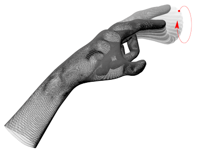

C Top
- CircleGesture — class in namespace null
-
The CircleGesture classes represents a circular finger movement.
A circle movement is recognized when the tip of a finger draws a circle within the Leap field of view.

Circle gestures are continuous. The CircleGesture objects for the gesture have three possible states:
- start -- The circle gesture has just started. The movement has progressed far enough for the recognizer to classify it as a circle.
- update -- The circle gesture is continuing.
- stop -- The circle gesture is finished.
- Controller — class in namespace null
-
The Controller class is your main interface to the Leap Motion Controller.
Create an instance of this Controller class to access frames of tracking data and configuration information. Frame data can be polled at any time using the Controller#frame() function. Call frame() or frame(0) to get the most recent frame. Set the history parameter to a positive integer to access previous frames. A controller stores up to 60 frames in its frame history.
Polling is an appropriate strategy for applications which already have an intrinsic update loop, such as a game.
D Top
- dump — public method in class Frame
-
Returns a JSON-formatted string containing the hands, pointables and gestures in this frame.
F Top
- finger — public method in class Frame
-
The finger with the specified ID in this frame.
Use the Frame finger() function to retrieve the finger from this frame using an ID value obtained from a previous frame. This function always returns a Finger object, but if no finger with the specified ID is present, an invalid Pointable object is returned.
Note that ID values persist across frames, but only until tracking of a particular object is lost. If tracking of a finger is lost and subsequently regained, the new Pointable object representing that physical finger may have a different ID than that representing the finger in an earlier frame.
- finger — public method in class Hand
-
The finger with the specified ID attached to this hand.
Use this function to retrieve a Pointable object representing a finger attached to this hand using an ID value obtained from a previous frame. This function always returns a Pointable object, but if no finger with the specified ID is present, an invalid Pointable object is returned.
Note that the ID values assigned to fingers persist across frames, but only until tracking of a particular finger is lost. If tracking of a finger is lost and subsequently regained, the new Finger object representing that finger may have a different ID than that representing the finger in an earlier frame.
- Frame — class in namespace null
-
The Frame class represents a set of hand and finger tracking data detected in a single frame.
The Leap detects hands, fingers and tools within the tracking area, reporting their positions, orientations and motions in frames at the Leap frame rate.
Access Frame objects using the Controller#frame() function.
- frame — public method in class Controller
-
Returns a frame of tracking data from the Leap.
Use the optional history parameter to specify which frame to retrieve. Call frame() or frame(0) to access the most recent frame; call frame(1) to access the previous frame, and so on. If you use a history value greater than the number of stored frames, then the controller returns an invalid frame.
G Top
- Gesture — class in namespace null
-
The Gesture class represents a recognized movement by the user.
The Leap watches the activity within its field of view for certain movement patterns typical of a user gesture or command. For example, a movement from side to side with the hand can indicate a swipe gesture, while a finger poking forward can indicate a screen tap gesture.
When the Leap recognizes a gesture, it assigns an ID and adds a Gesture object to the frame gesture list. For continuous gestures, which occur over many frames, the Leap updates the gesture by adding a Gesture object having the same ID and updated properties in each subsequent frame.
Important: Recognition for each type of gesture must be enabled; otherwise no gestures are recognized or reported.
Subclasses of Gesture define the properties for the specific movement patterns recognized by the Leap.
The Gesture subclasses for include:
- CircleGesture -- A circular movement by a finger.
- SwipeGesture -- A straight line movement by the hand with fingers extended.
- ScreenTapGesture -- A forward tapping movement by a finger.
- KeyTapGesture -- A downward tapping movement by a finger.
Circle and swipe gestures are continuous and these objects can have a state of start, update, and stop.
The screen tap gesture is a discrete gesture. The Leap only creates a single ScreenTapGesture object appears for each tap and it always has a stop state.
Get valid Gesture instances from a Frame object. You can get a list of gestures from the Frame gestures array. You can also use the Frame gesture() method to find a gesture in the current frame using an ID value obtained in a previous frame.
Gesture objects can be invalid. For example, when you get a gesture by ID using Frame.gesture(), and there is no gesture with that ID in the current frame, then gesture() returns an Invalid Gesture object (rather than a null value). Always check object validity in situations where a gesture might be invalid.
H Top
- Hand — class in namespace null
-
The Hand class reports the physical characteristics of a detected hand.
Hand tracking data includes a palm position and velocity; vectors for the palm normal and direction to the fingers; properties of a sphere fit to the hand; and lists of the attached fingers and tools.
Note that Hand objects can be invalid, which means that they do not contain valid tracking data and do not correspond to a physical entity. Invalid Hand objects can be the result of asking for a Hand object using an ID from an earlier frame when no Hand objects with that ID exist in the current frame. A Hand object created from the Hand constructor is also invalid. Test for validity with the Hand#valid property.
- hand — public method in class Frame
-
The Hand object with the specified ID in this frame.
Use the Frame hand() function to retrieve the Hand object from this frame using an ID value obtained from a previous frame. This function always returns a Hand object, but if no hand with the specified ID is present, an invalid Hand object is returned.
Note that ID values persist across frames, but only until tracking of a particular object is lost. If tracking of a hand is lost and subsequently regained, the new Hand object representing that physical hand may have a different ID than that representing the physical hand in an earlier frame.
I Top
- Invalid — constant in Frame
-
An invalid Frame object.
You can use this invalid Frame in comparisons testing whether a given Frame instance is valid or invalid. (You can also check the Frame#valid property.)
- Invalid — constant in Hand
-
An invalid Hand object.
You can use an invalid Hand object in comparisons testing whether a given Hand instance is valid or invalid. (You can also use the Hand valid property.)
- Invalid — constant in Pointable
-
An invalid Pointable object.
You can use this Pointable instance in comparisons testing whether a given Pointable instance is valid or invalid. (You can also use the Pointable.valid property.)
K Top
- KeyTapGesture — class in namespace null
-
The KeyTapGesture class represents a tapping gesture by a finger or tool.
A key tap gesture is recognized when the tip of a finger rotates down toward the palm and then springs back to approximately the original postion, as if tapping. The tapping finger must pause briefly before beginning the tap.

Key tap gestures are discrete. The KeyTapGesture object representing a tap always has the state, STATE_STOP. Only one KeyTapGesture object is created for each key tap gesture recognized.
L Top
- loop — static public method in class Leap
-
The Leap.loop() function passes a frame of Leap data to your callback function and then calls window.requestAnimationFrame() after executing your callback function.
Leap.loop() sets up the Leap controller and WebSocket connection for you. You do not need to create your own controller when using this method.
Your callback function is called on an interval determined by the client browser. Typically, this is on an interval of 60 frames/second. The most recent frame of Leap data is passed to your callback function. If the Leap is producing frames at a slower rate than the browser frame rate, the same frame of Leap data can be passed to your function in successive animation updates.
As an alternative, you can create your own Controller object and use a Controller#onFrame onFrame callback to process the data at the frame rate of the Leap device. See Controller for an example.
P Top
- Pointable — class in namespace null
-
The Pointable class reports the physical characteristics of a detected finger or tool.
Both fingers and tools are classified as Pointable objects. Use the Pointable.tool property to determine whether a Pointable object represents a tool or finger. The Leap classifies a detected entity as a tool when it is thinner, straighter, and longer than a typical finger.
Note that Pointable objects can be invalid, which means that they do not contain valid tracking data and do not correspond to a physical entity. Invalid Pointable objects can be the result of asking for a Pointable object using an ID from an earlier frame when no Pointable objects with that ID exist in the current frame. A Pointable object created from the Pointable constructor is also invalid. Test for validity with the Pointable.valid property.
- pointable — public method in class Frame
-
The Pointable object with the specified ID in this frame.
Use the Frame pointable() function to retrieve the Pointable object from this frame using an ID value obtained from a previous frame. This function always returns a Pointable object, but if no finger or tool with the specified ID is present, an invalid Pointable object is returned.
Note that ID values persist across frames, but only until tracking of a particular object is lost. If tracking of a finger or tool is lost and subsequently regained, the new Pointable object representing that finger or tool may have a different ID than that representing the finger or tool in an earlier frame.
R Top
- rotationAngle — public method in class Frame
-
The angle of rotation around the rotation axis derived from the overall rotational motion between the current frame and the specified frame.
The returned angle is expressed in radians measured clockwise around the rotation axis (using the right-hand rule) between the start and end frames. The value is always between 0 and pi radians (0 and 180 degrees).
The Leap derives frame rotation from the relative change in position and orientation of all objects detected in the field of view.
If either this frame or sinceFrame is an invalid Frame object, then the angle of rotation is zero.
- rotationAngle — public method in class Hand
-
The angle of rotation around the rotation axis derived from the change in orientation of this hand, and any associated fingers and tools, between the current frame and the specified frame.
The returned angle is expressed in radians measured clockwise around the rotation axis (using the right-hand rule) between the start and end frames. The value is always between 0 and pi radians (0 and 180 degrees).
If a corresponding Hand object is not found in sinceFrame, or if either this frame or sinceFrame are invalid Frame objects, then the angle of rotation is zero.
- rotationAxis — public method in class Frame
-
The axis of rotation derived from the overall rotational motion between the current frame and the specified frame.
The returned direction vector is normalized.
The Leap derives frame rotation from the relative change in position and orientation of all objects detected in the field of view.
If either this frame or sinceFrame is an invalid Frame object, or if no rotation is detected between the two frames, a zero vector is returned.
- rotationAxis — public method in class Hand
-
The axis of rotation derived from the change in orientation of this hand, and any associated fingers and tools, between the current frame and the specified frame.
The returned direction vector is normalized.
If a corresponding Hand object is not found in sinceFrame, or if either this frame or sinceFrame are invalid Frame objects, then this method returns a zero vector.
- rotationMatrix — public method in class Frame
-
The transform matrix expressing the rotation derived from the overall rotational motion between the current frame and the specified frame.
The Leap derives frame rotation from the relative change in position and orientation of all objects detected in the field of view.
If either this frame or sinceFrame is an invalid Frame object, then this method returns an identity matrix.
- rotationMatrix — public method in class Hand
-
The transform matrix expressing the rotation derived from the change in orientation of this hand, and any associated fingers and tools, between the current frame and the specified frame.
If a corresponding Hand object is not found in sinceFrame, or if either this frame or sinceFrame are invalid Frame objects, then this method returns an identity matrix.
S Top
- scaleFactor — public method in class Frame
-
The scale factor derived from the overall motion between the current frame and the specified frame.
The scale factor is always positive. A value of 1.0 indicates no scaling took place. Values between 0.0 and 1.0 indicate contraction and values greater than 1.0 indicate expansion.
The Leap derives scaling from the relative inward or outward motion of all objects detected in the field of view (independent of translation and rotation).
If either this frame or sinceFrame is an invalid Frame object, then this method returns 1.0.
- scaleFactor — public method in class Hand
-
The scale factor derived from the hand's motion between the current frame and the specified frame.
The scale factor is always positive. A value of 1.0 indicates no scaling took place. Values between 0.0 and 1.0 indicate contraction and values greater than 1.0 indicate expansion.
The Leap derives scaling from the relative inward or outward motion of a hand and its associated fingers and tools (independent of translation and rotation).
If a corresponding Hand object is not found in sinceFrame, or if either this frame or sinceFrame are invalid Frame objects, then this method returns 1.0.
- ScreenTapGesture — class in namespace null
-
The ScreenTapGesture class represents a tapping gesture by a finger or tool.
A screen tap gesture is recognized when the tip of a finger pokes forward and then springs back to approximately the original postion, as if tapping a vertical screen. The tapping finger must pause briefly before beginning the tap.

ScreenTap gestures are discrete. The ScreenTapGesture object representing a tap always has the state, STATE_STOP. Only one ScreenTapGesture object is created for each screen tap gesture recognized.
- SwipeGesture — class in namespace null
-
The SwipeGesture class represents a swiping motion of a finger or tool.

Swipe gestures are continuous.
T Top
- tool — public method in class Frame
-
The tool with the specified ID in this frame.
Use the Frame tool() function to retrieve a tool from this frame using an ID value obtained from a previous frame. This function always returns a Pointable object, but if no tool with the specified ID is present, an invalid Pointable object is returned.
Note that ID values persist across frames, but only until tracking of a particular object is lost. If tracking of a tool is lost and subsequently regained, the new Pointable object representing that tool may have a different ID than that representing the tool in an earlier frame.
- toString — public method in class Frame
-
A string containing a brief, human readable description of the Frame object.
- toString — public method in class Hand
-
A string containing a brief, human readable description of the Hand object.
- toString — public method in class Pointable
-
A string containing a brief, human readable description of the Pointable object.
- translation — public method in class Frame
-
The change of position derived from the overall linear motion between the current frame and the specified frame.
The returned translation vector provides the magnitude and direction of the movement in millimeters.
The Leap derives frame translation from the linear motion of all objects detected in the field of view.
If either this frame or sinceFrame is an invalid Frame object, then this method returns a zero vector.
- translation — public method in class Hand
-
The change of position of this hand between the current frame and the specified frame
The returned translation vector provides the magnitude and direction of the movement in millimeters.
If a corresponding Hand object is not found in sinceFrame, or if either this frame or sinceFrame are invalid Frame objects, then this method returns a zero vector.